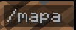

¶Mapa a cestování
iStředozemě je obrovská. Mapa ti ukáže, kde jsi, a mezi objevenými místy můžeš cestovat bez pěšího pochodu.
¶Příkaz /mapa
Mapu otevřeš příkazem /mapa.

![OVĚŘIT] Zda příkaz /mapa existuje a co přesně dělá. V kódu serveru jsem ho nenašel. Mapu Středozemě otevírá předmět „Mapa Středozemě“ pravým klikem. Text se doplní po odpovědi majitele.
¶Jak funguje cestování
- Otevři mapu Středozemě.
- Na mapě uvidíš bílé kruhové značky se žlutým středem. To jsou cíle, kam můžeš cestovat.
- Klikni na značku. Otevře se okno Cesta do:, ve kterém uvidíš souřadnice, vzdálenost a čas příštího čekání.
- Potvrď tlačítkem Cestovat. Nechceš-li, zvol Zrušit.
✓Cíle musíš nejdřív objevit. Region se odemkne, když v něm stojíš na povrchu (jeskyně se nepočítají). Po první návštěvě se odemknou všechny jeho body a odemčení je trvalé. Uvidíš zprávu „Region objeven!“.
¶Čekání mezi cestami
- Po každé cestě běží společné čekání pro všechny cíle. Odpočet vidíš v okně jako Další cesta za. Během čekání je tlačítko Cestovat zakázané.
- Čekání trvá 15 až 40 minut podle vzdálenosti.
- Pokud do stejného cíle cestuješ opakovaně, čekání se zkracuje, až o polovinu. Plná sleva platí po 50 příjezdech do téhož cíle a počítá se zvlášť pro každý cíl.
- VIP hráči čekají poloviční dobu. Informace o VIP si zjistíš příkazem
/ardacesty vip.
!Cestování funguje jen uvnitř jedné dimenze a v místě příjezdu musí být bezpečný terén. Jinak uvidíš hlášku, že tam cestovat nejde.
![OVĚŘIT] Které cíle jsou dostupné na ostrém serveru a zda už běží verze cestování s VIP (0.2.0). Na zkušební šabloně byly jen Fangorn a Lothlórien.
© Všechna práva vyhrazena tvůrcům módů, naším výtvorem je pouze zprostředkování serveru. Nejedná se o oficiální produkt Minecraftu. Nejsme spojeni s Mojang Studios.